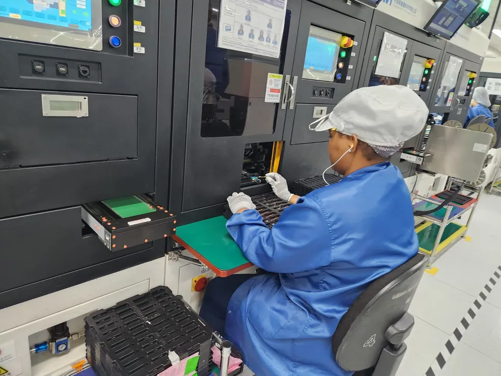

Curiosidades sobre o LDR

O LDR (Light Dependent Resistor) é feito de materiais semicondutores, como o sulfeto de cádmio, que mudam sua resistência conforme a luz. Esses materiais são depositados sobre uma base isolante, com dois eletrodos conectados para permitir o fluxo de corrente. Depois, o LDR é encapsulado para proteção. Ele funciona alterando sua resistência de acordo com a intensidade da luz que incide sobre ele.